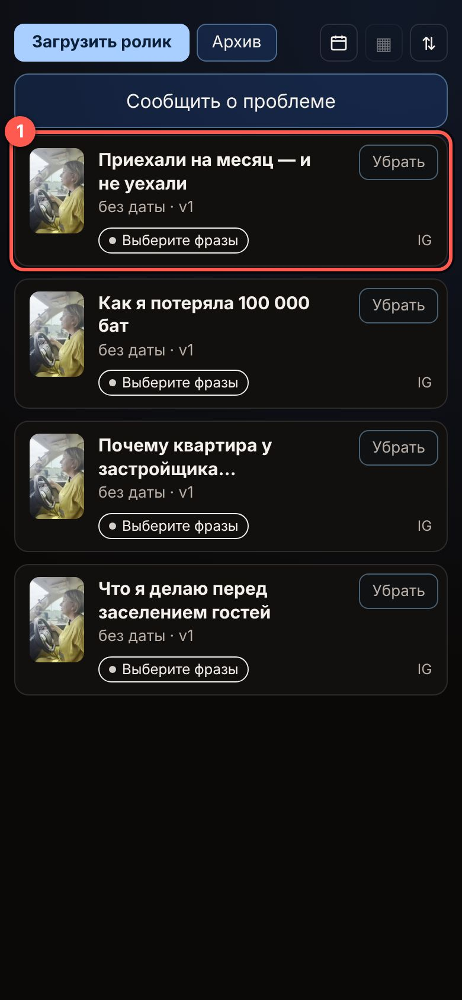
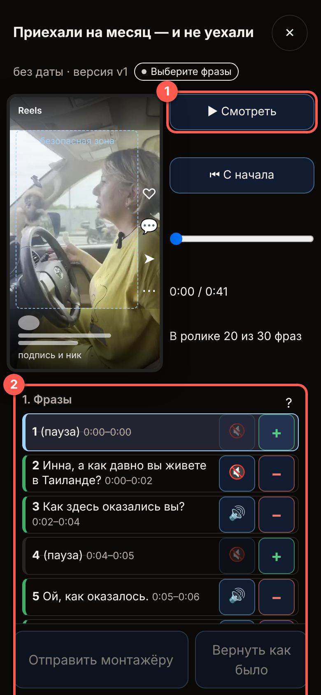
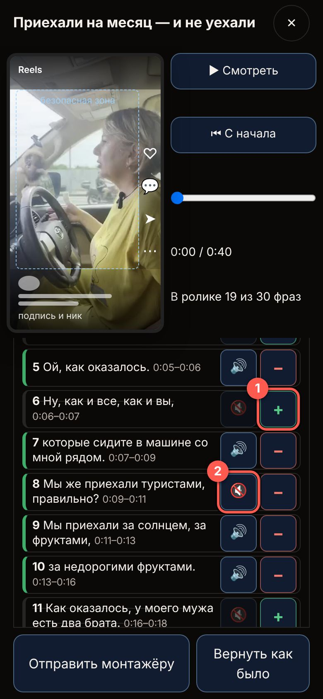
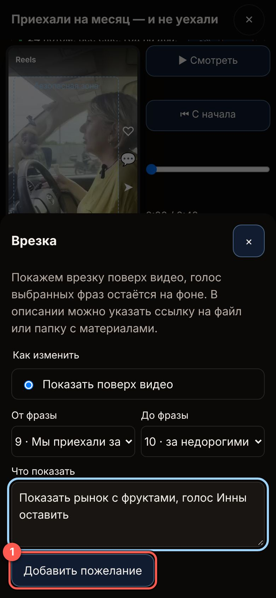
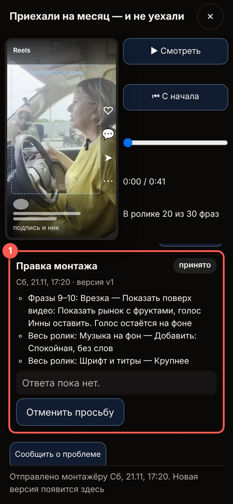
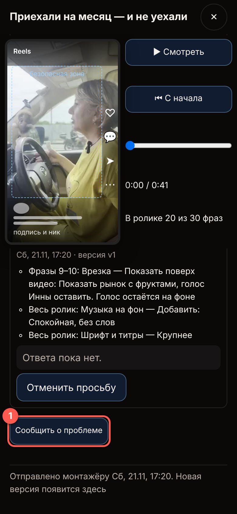

ТайСабай · Контент-завод · Монтаж
Монтаж с телефона: как поправить ролик
Вы решаете, какие фразы останутся в ролике, пишете пожелания и отправляете всё монтажёру одной кнопкой. Монтировать самому ничего не нужно.
Весь путь за минуту
- Откройте ролик со статусом «Выберите фразы».
- Посмотрите его и уберите лишние фразы.
- Добавьте пожелания: шрифт, переход, громкость, музыка, врезка.
- Проверьте список «Что поменять» и нажмите «Отправить монтажёру».
- Ждите новую версию в этой же карточке.
Красные цифры и рамки на снимках показывают, куда нажимать. В самом кабинете их нет.
Где это. Кабинет synapse.synapsebusiness.ru/cabinet.html → проект «ТайСабай» → в меню «Контент-завод» → «Монтаж».
Откройте ролик
На экране «Монтаж» лежат ролики со съёмки. Под названием — статус. «Выберите фразы» значит, что ролик ждёт вас.
- 1 Нажмите на ролик — откроется его карточка.
Статусы меняются так: «Выберите фразы» → «У монтажёра» → «Монтаж на согласовании».
Кнопку «Убрать» справа от названия не трогайте: она убирает весь ролик в архив, а не фразу.

Посмотрите ролик
Сверху закреплён плеер, он остаётся на месте, пока вы листаете фразы.
- 1 «Смотреть» проигрывает ролик так, как он получится: убранные фразы пропускаются. «С начала» возвращает к первой секунде.
- 2 Ниже — список «Фразы»: весь ролик, разбитый на реплики.
Строка «В ролике 20 из 30 фраз» показывает, сколько фраз сейчас оставлено.

Уберите лишние фразы
У каждой фразы справа две кнопки.
- 1 «−» убирает фразу из ролика. У убранной фразы кнопка меняется на «+» — он возвращает её обратно.
- 2 Динамик выключает звук у этой фразы: картинка останется, голоса не будет. Нажмите ещё раз — звук вернётся.
Зелёная полоска слева — фраза в ролике. Серая строка — фраза убрана. Паузы и куски без слов убраны заранее, их можно вернуть тем же «+».
Само видео при этом не режется и не портится. Это только пометки — любую можно отменить.

Нажмите на текст фразы
Если нажать не на кнопки, а на сами слова, снизу выедет шторка этой фразы.
- 1 «Показать в плеере» — плеер перейдёт к этой фразе, даже если она убрана. Удобно, чтобы послушать и решить.
- 2 «Пожелание к этой фразе» — попросить что-то именно про неё, например сделать её громче.
Крестик в углу закрывает шторку.

Добавьте пожелания к монтажу
Пролистайте фразы до конца — под ними шесть плиток 1. Каждая открывает шторку с готовыми вариантами и полем для пояснения.
| Плитка | Что можно попросить |
|---|---|
| Шрифт и титры | Крупнее, мельче, другой стиль, убрать титры |
| Переход | Резкая склейка, плавно, приближение — и между какими фразами |
| Громкость | Громче или тише — весь ролик или одна фраза |
| Музыка на фон | Добавить, убрать, тише, громче; можно написать, какая |
| Врезка | Показать другую картинку поверх видео, голос остаётся |
| Другое | Всё остальное своими словами |
Пожеланий может быть несколько, до двадцати на одну отправку.

Пример: врезка поверх голоса
Нажмите плитку «Врезка». В шторке:
- «От фразы» и «До фразы» — на каком куске ролика показать врезку.
- «Что показать» — опишите словами. Сюда же можно вставить ссылку на файл или папку.
- 1 «Добавить пожелание» — оно попадёт в список, но ещё никуда не отправится.
Голос выбранных фраз остаётся на фоне — монтажёр меняет только картинку.
Остальные плитки устроены так же: выбрали вариант, при желании дописали пояснение, нажали «Добавить пожелание».


Проверьте, что уйдёт монтажёру
Под плитками собирается список «Что поменять» 1. В нём одной строкой написано, сколько фраз убрано и где выключен звук, а ниже — каждое пожелание.
- 2 Крестик справа снимает пожелание, если передумали.
Прочитайте список целиком: монтажёр получит ровно это.

Отправьте одной кнопкой
Внизу экрана всегда видны две кнопки.
- 1 «Отправить монтажёру» — отправляет сразу и фразы, и все пожелания. Кнопка серая, пока вы ничего не изменили.
- 2 «Вернуть как было» — сбрасывает всё, что вы наменяли и ещё не отправили.
Отправка ничего не публикует в соцсети. Ролик уходит только монтажёру.

Что будет дальше
Внизу появится строка «Отправлено монтажёру…» с датой и временем 1. Статус ролика сменится на «У монтажёра».
В блоке «Просьбы по этому ролику» видна ваша правка: что вы просили и её состояние — «принято», потом «в работе», потом «готово, посмотрите». Ответ монтажёра появится там же.
- Пока правка у монтажёра, менять фразы нельзя.
- Ошиблись — нажмите «Отменить просьбу», поправьте и отправьте заново. Отмена срабатывает сразу, без вопроса.
Новая версия появляется не сразу, срок на экране не показывается. Обновлять страницу каждую минуту не нужно.


Сообщите о проблеме
Ролик не запускается, кнопка не нажимается, пропали фразы — это не к монтажёру.
- 1 Нажмите «Сообщить о проблеме» — кнопка есть в карточке ролика и вверху экрана «Монтаж».
- Напишите коротко, что не работает, и нажмите «Отправить».
Появится «Отправлено, задача №…». Сообщение уходит в поддержку кабинета, а не в очередь монтажа.


Частые вопросы
- Я случайно убрал нужную фразу. Она пропала?
- Нет. Нажмите «+» в её строке — фраза вернётся. До отправки можно сбросить всё кнопкой «Вернуть как было».
- Закрыл карточку и не отправил. Всё потерялось?
- Несохранённые пометки и пожелания остаются, пока открыта эта вкладка кабинета. Если вкладку закрыть, придётся отметить заново.
- Можно отправить только пожелание, не трогая фразы?
- Да. Достаточно одного пожелания — кнопка «Отправить монтажёру» станет активной.
- Где публикация и «Берём / Не берём»?
- Они появятся в этой же карточке под строкой «Публикация и решение», когда у ролика будет собранная версия монтажа. У исходника их нет, чтобы не мешали.
- Уйдёт ли что-то в Instagram само?
- Нет. На этом экране ничего не публикуется.
Снимки сделаны 21.11.2026 на версии экрана, выпущенной в рабочий кабинет в этот же день, с настоящими фразами ролика «Приехали на месяц — и не уехали». Время отправки и номер задачи на снимках условные.